Meal prep: recipes, a weekly plan, and smarter lists
Recipes become a library inside the Lists tab. A plan picks a pool of recipes for a period, and a grocery list can be built from it. The new-list flow becomes a multi-step wizard, and recipes can be imported from markdown. Screens 1 and 2 shipped in PR B; the rest are proposals for PRs C, D and E.
11 screensLo-fi · monochromeMobile 375×812Tap any wireframe to zoom
Flow
Five PRs, each shippable on its own. A and B are done. The full reasoning is in docs/plans/meal-prep/.
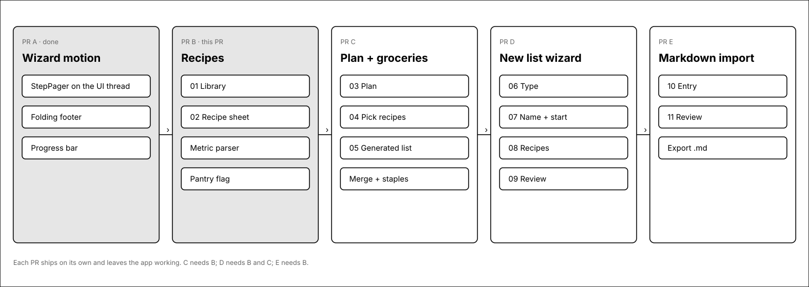
1 · Recipes library (PR B, shipped)
The Lists tab gets a switch. Lists and Recipes exist today; Plan arrives in PR C.
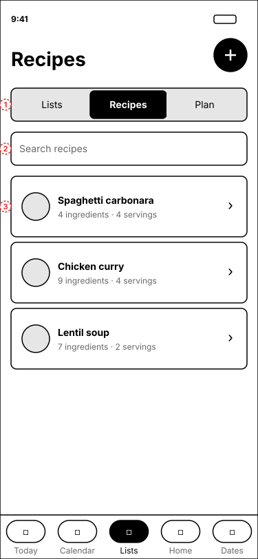
1Three-way switch. The header and the switch stay mounted while the content below fades, so switching does not jump.
2Search matches recipe names and ingredient names, so "salmon" finds every recipe that uses it.
3Cards show ingredient and serving counts. Tapping opens the recipe; the plus button in the header adds one.
2 · Recipe sheet (PR B, steps and sections added)
A bottom sheet, the same pattern as adding a list. Ingredients are typed one per line; the method is a list of steps.
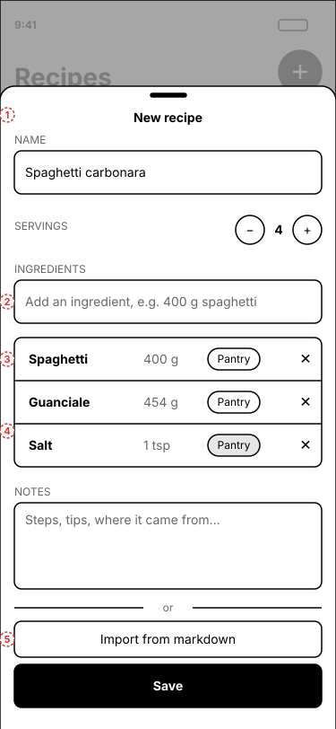
1Name. Save lives in the sheet footer so it stays reachable above the keyboard.
2One line per ingredient. English or Portuguese: "400 g de esparguete", "2 colheres de sopa de azeite", "1 lb beef".
3Everything is stored in metric. Pounds, ounces and cups convert on entry (1 lb becomes 454 g). The Pantry pill marks staples, pre-filled from a built-in en/pt-PT list.
4Steps. Type a step and tap Add step. Tap a step to edit it: the box shows its text, and arrows move it up or down, with a remove button. A step still in the box is saved with the recipe.
5The numbered steps. Below them: Notes (free text: tips, variations) and Source (a link, a book, who gave it to you).
Where it is stored: still the recipe's one notes text, written as markdown sections (## Steps, ## Notes, ## Source). No migration; the import and share text is the same. Notes written before sections existed open as Notes.
Why one line per ingredient: it is the same parser the markdown import uses, so what you type and what you import behave identically.
3 · Plan: a week of recipes (PR C, redesigned)
One screen answers "what are we cooking this week, and what do we buy?". A plan is still a pool of recipes (no per-day slots), but now it is organised by week.
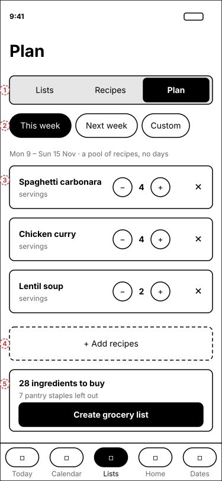
1Week navigator. The arrows move one week at a time; the line under the dates says This week, Next week or Last week. A plan exists for every week: the first recipe added creates it, so there is no "New plan".
2Plan is the third segment of the Lists switch. The period chips and the Custom dates are gone.
3One card per recipe: servings stepper and remove. Quantities scale by the chosen servings divided by the recipe's base servings.
4The one primary action. The dashed button opens the pick-recipes sheet (04).
5The shopping list for the week. With no list yet it says how many ingredients to buy and offers Create list. With a list it shows progress and Open list; a "Plan changed" badge appears when the list no longer matches the plan; Open list goes to the list, where Update from plan shows the diff as before.
6Clearing a week is a small quiet link, not a red button. It asks first; lists made from the plan are kept.
Why a week: the goal is "what are we prepping this week". Days remain a later, additive column. A plan with dates that are not a Monday to Sunday week (made before this change) is listed under "Other plans" so nothing is lost.
13 · Plan: an empty week
Paging to a week with nothing in it shows one calm card, not a form.
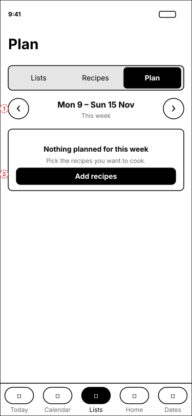
1The navigator stays, so paging on never needs a different screen.
2Add recipes opens the pick-recipes sheet; confirming creates the week's plan.
4 · Pick recipes (PR C)
Multi-select with search. The same component is reused by the new-list wizard in PR D.
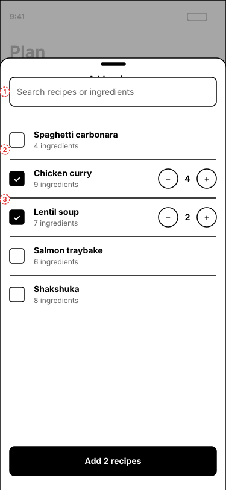
1Search by recipe or ingredient name.
2Checkbox rows. A ticked row reveals its servings stepper.
3The footer button counts what you picked and stays reachable above the keyboard.
5 · Generated grocery list (PR C)
An ordinary list, so check-off, reorder and undo-delete keep working. The plan is only a source of items.
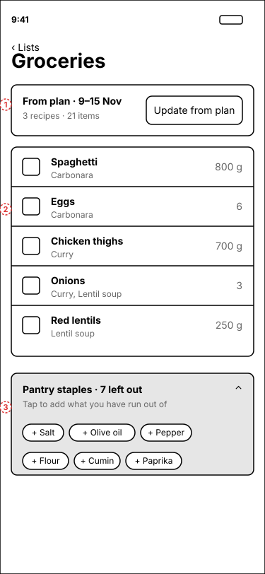
1Banner shows where the list came from. "Update from plan" is explicit: it shows a diff and asks, it never syncs silently.
2Merged rows show their sources. Removing a recipe from the plan subtracts only its share, and an item edited by hand is never overwritten.
3Staples are collapsed and left out. One tap adds the ones you have run out of, so salt does not land on every weekly list.
Merging rule: rows merge only when the normalised name and the unit family match (g with kg, ml with l). "1 onion" and "200 g onion" stay as two rows: we do not guess.
6 · New list wizard, step 1: type (PR D)
Same pattern as adding a special date. A sheet with a progress bar; picking a type moves on by itself.
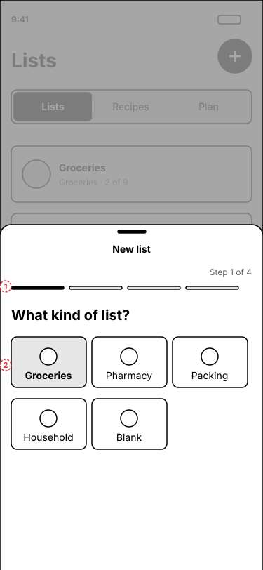
1Progress bar. The segment count depends on the path: Empty is 2 steps, Meal plan is 4. The bar animates its length instead of jumping.
2The existing five templates. Only Groceries offers the Meal plan path.
7 · Wizard step 2: name and start (PR D)
Only Groceries asks where to start from.
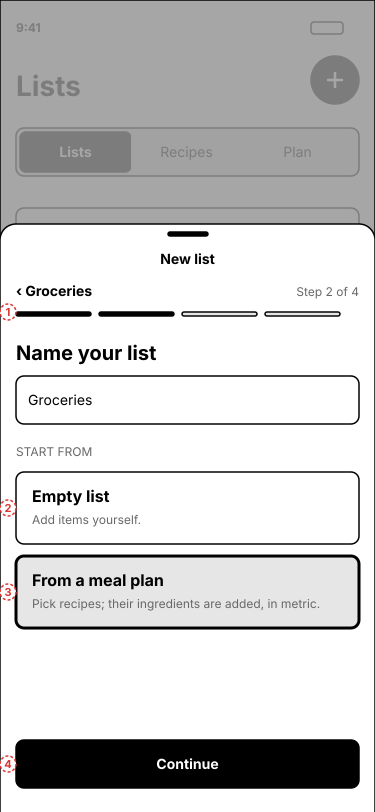
1Back shows the chosen type. Selections are kept when going back.
2Two tiles instead of a switch: Empty list is a list with nothing in it (no starter items on Groceries), and its footer button reads "Create list". With no recipes yet, the meal plan tile is disabled and says to add recipes first.
3From a meal plan continues to the period and recipes, then the review. Picking recipes for a week that has a plan reuses it; otherwise one is created.
4Footer button. It folds away on step 1 and slides in from step 2, as in the date wizard.
8 · Wizard step 3: recipes (PR D)
The pick-recipes component from PR C, with the period chips above it.
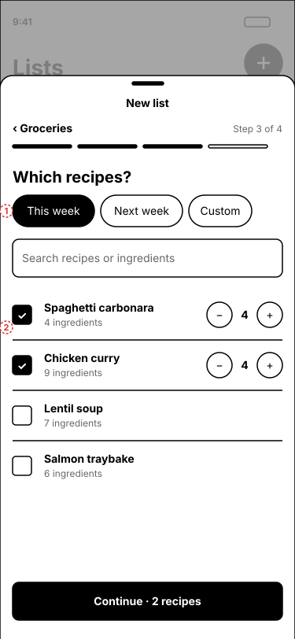
1Period chips set which plan this list is built from, and pre-select recipes already in that plan.
2Ticked rows reveal servings. The footer counts the recipes picked.
9 · Wizard step 4: review (PR D)
Last chance to drop what you already have, before anything is written.
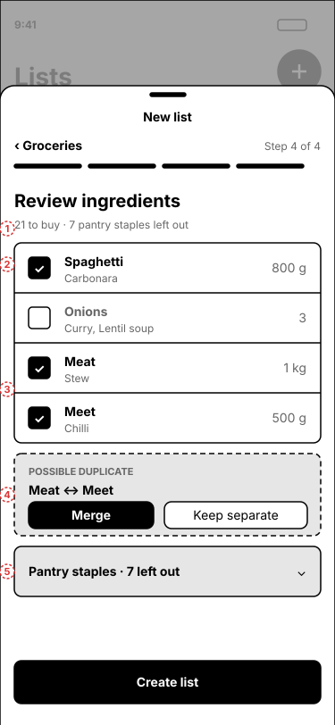
1Totals: what will be added, and how many staples were left out.
2Every row can be unticked; unticked rows are not added. Sources show which recipes asked for it.
3Merged rows, such as onions shared by two recipes.
4Possible duplicate. Two rows in the same unit family whose names are one typo apart ("Meat" and "Meet") are offered as a pair. Nothing changes until the member taps Merge; Keep separate dismisses the pair. After a merge the row shows the summed amount and both recipes, and a line under the list ("Meet merged into Meat" with Undo) reverses it. The row fed by more recipes is kept. Never merged automatically: fuzzy matching also links unrelated words.
5Staples stay collapsed here too.
10 · Import recipes: entry (PR E)
Paste only for now: a file picker or share sheet needs a native module, so it waits for an APK release.
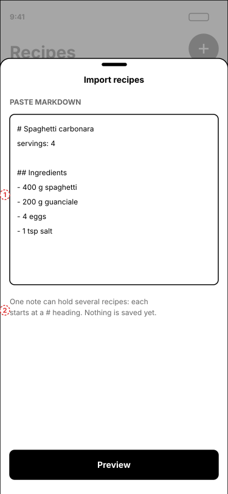
1Paste text. A note may hold several recipes, each starting at a # heading. English or Portuguese, any bullet style.
2Nothing is saved yet: Preview shows what was understood. It is reached from the + chooser (12).
11 · Import review (PR E)
Never import silently. Every line is shown as it was read.
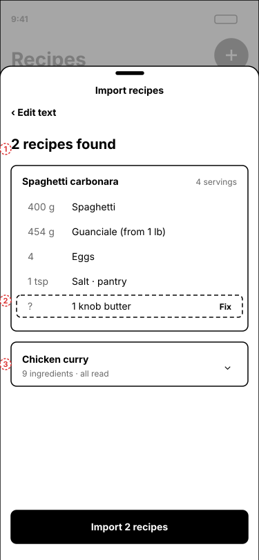
1Count of recipes found.
2A line the parser could not read is outlined and marked "?", with a Fix action. Conversions are shown ("from 1 lb").
3Recipes that read cleanly are collapsed. Each has a tick: a recipe already in the library starts unticked, and one with no ingredients cannot be ticked. A line with no name or an impossible amount is left out unless fixed.
Why a review step: markdown from notes apps is messy. A wrong quantity in a recipe is worse than a skipped import.
12 · Add a recipe: write or import
The + in Recipes asks first, like the new-list wizard asks the type first. The recipe sheet (02) no longer carries an import button.
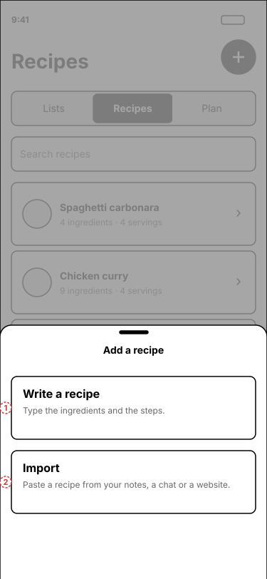
1Write a recipe opens the recipe sheet (02).
2Import opens the paste step (10). The word markdown never appears; a link or a photo can become further rows here later.
14 · Recipe detail with sections
What a recipe looks like when you open it. Edit, share and delete are unchanged.
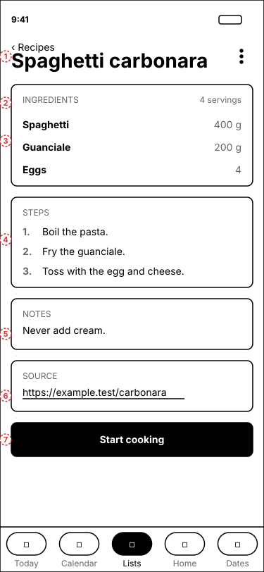
1Ingredients, with pantry staples set apart.
2Steps, numbered. A recipe with no steps shows no Steps card.
3Notes, as typed.
4Source. A web address opens in the browser; anything else is shown as text.
Start cooking (below Ingredients, Steps, Notes and Source) opens the cooking view (15, 16). It is shown only for a recipe that has steps.
15 · Cooking view
Full screen, hands-free: one big step at a time, the ingredients to tick off, and the screen kept awake while it is open.
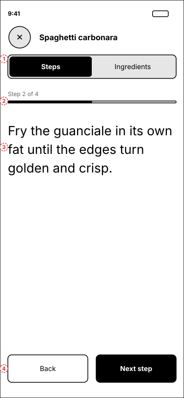
1Close, the recipe name, and a Steps / Ingredients switch. The step you are on and what you have ticked are kept when you switch.
2"Step 2 of 4" and a thin progress bar.
3The step in large type (26 pt, and it still follows the system font size). Long steps scroll.
4Back and Next step, 56 px high. On the last step Next reads Done and closes the view. The system back button closes it too.
Screen kept awake only while this view is open (expo-keep-awake, already part of the native build, so no new APK). Nothing is saved: ticks and the step start fresh each time.
16 · Cooking view: ingredients
Every ingredient, pantry staples included, as one list to tick off while you gather them.
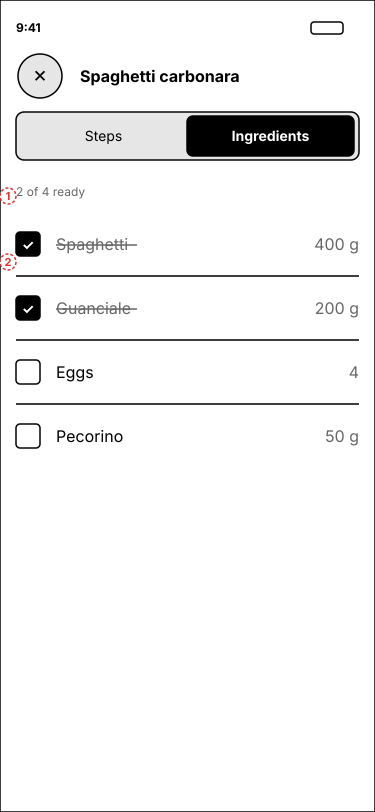
1How many are ready.
2Tap anywhere on a row to tick it; a ticked row is struck through and dimmed. Quantities are the recipe's, not scaled: scaling servings while cooking is a later idea.
Rules that cut across screens
Decided in the brainstorm; each is a few lines of code but easy to get wrong later.
Topic
Rule
Units
Metric only: g, kg, ml, l, tbsp, tsp, pinch, and unit for counted things. Imperial converts on entry.
Languages
Recipes and ingredients may be in pt-PT or English. Ingredient text is never translated.
Sharing
Recipes and plans are shared across the space, like lists.
Staples
One binary flag per ingredient, pre-filled from a dictionary, overridable. Left off generated lists by default.
List link
One way. Generate once, then "Update from plan" on request, with a diff.
Motion
UI thread, 460 ms, the iOS sheet curve, reduce-motion respected. Shared with the new wizard.
Out of v1
Nutrition, prices, photos, per-day slots, tags.
Open questions
1Staples: is one flag enough, or is a middle tier needed for long-lasting but not staple items (rice, pasta, tinned goods)? Decide in PR C.
2Should a pantry ("I have this") exist, so ticking "need salt" clears it until the next plan? Not needed for v1.
3The plan period: is next Monday a better default than today for "this week"?
4Should Plan be a third switch segment, or its own tab? Five tabs are already full, so the switch is assumed.